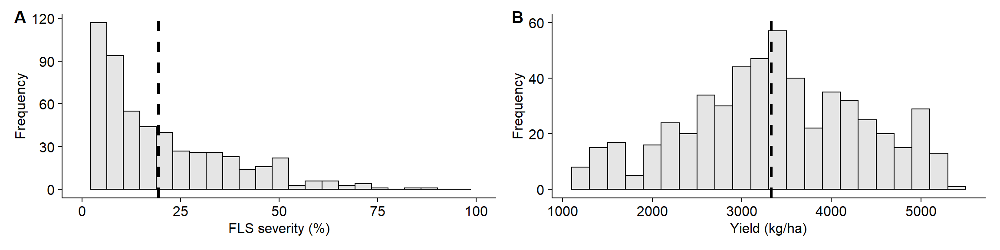
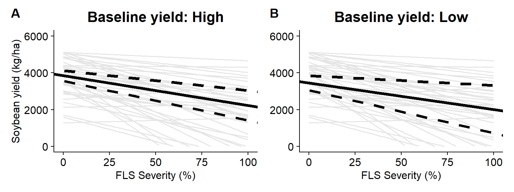

library(tidyverse)
library(metafor)
library(ggthemes)
library(cowplot)
library(scales)
library(knitr)
library(broom)
library(dplyr)
library(readxl)
library(gsheet)
library(janitor)
library(ggforce)
fls_dat <- read_csv("fls_data.csv") %>%
filter(mean_yld != "NA") %>%
filter(mean_sev != "NA") %>%
filter(study!= 60) %>%
group_by(study) %>%
mutate(difer = max(mean_sev) - min(mean_sev)) %>%
filter(difer>5) #selecting studies with more than 5% difference in disease severity across treatments##
## -- Column specification -----------------------------------------------------------------------
## cols(
## .default = col_double(),
## location = col_character(),
## state = col_character(),
## cultivar = col_character(),
## planting_date = col_character(),
## app_date = col_character(),
## growth_stage = col_character(),
## brand_name = col_character(),
## group = col_character(),
## active_ingred = col_character(),
## rating_disease = col_character()
## )
## i Use `spec()` for the full column specifications.head(fls_dat)length(unique(fls_dat$study))## [1] 39The histograms below summarize the distribution of the two variables: FLS severity and soybean yield.
hist_sev <- ggplot(fls_dat, aes(mean_sev)) +
geom_histogram(bin = 1, binwidth = 4.2, color = "black" , fill = "black",
alpha = 0.1) +
geom_vline(xintercept = 19.46,
size = 1.2,
linetype = 2)+
scale_x_continuous(breaks = c(0, 25,50,75,100), limits = c(0, 100)) +
theme_half_open()+
theme(axis.title = element_text(size=12),
axis.text = element_text(size=12))+
labs(x = "FLS severity (%)", y = "Frequency")
hist_yld <- ggplot(fls_dat, aes(mean_yld)) +
geom_histogram(bin = 1, binwidth = 200, color = "black" , fill = "black",
alpha = 0.1) +
geom_vline(xintercept = 3327,
size = 1.2,
linetype = 2)+
scale_y_continuous(breaks = c(0,20,40,60), limits = c(0, 60)) +
theme_half_open()+
theme(axis.title = element_text(size=12),
axis.text = element_text(size=12))+
labs(x = "Yield (kg/ha)", y = "Frequency")
library(patchwork)
(hist_sev + hist_yld) +
plot_layout(nrow = 1)+
plot_annotation(tag_levels = "A")
ggsave("Figures/histograms.png", height=3, width=8, dpi = 600, bg = "white")Ordinary regression for each study.
ggplot(fls_dat, aes(mean_sev, mean_yld))+
geom_point(shape = 1)+
stat_smooth(method = lm, fullrange=TRUE, se = F, col = "black")+
ylab("Yield (kg/ha)")+
xlab("FLS Severity (%)")+
ylim(0,6000)+
theme_half_open()+
theme(axis.title = element_text(size=12),
axis.text = element_text(size=12))+
facet_wrap(~ study, ncol = 5, scales = "fixed")## `geom_smooth()` using formula 'y ~ x'ggsave("Figures/grid_lines.png", height=12, width=12, dpi = 600, bg = "white")## `geom_smooth()` using formula 'y ~ x'lines_kg = ggplot(fls_dat, aes(mean_sev, mean_yld))+
geom_smooth(method="lm", fullrange= T, se=F, size=0.7, color="grey80", aes(group = factor(study)))+
# geom_point(alpha = 0.5, shape = 1)+
ylab("Yield (kg/ha)")+
xlab("FLS Severity (%)")+
ylim(0,6000)+
xlim(0,100)+
theme_half_open()+
theme(axis.title = element_text(size=12),
axis.text = element_text(size=12))
lines_kg## `geom_smooth()` using formula 'y ~ x'## Warning: Removed 178 rows containing missing values (geom_smooth).reg_dc = fls_dat %>%
group_by(study, year) %>%
summarise(intercept = lm(mean_yld~mean_sev)$coefficients[1],
slope = lm(mean_yld~mean_sev)$coefficients[2],
r2 = summary(lm(mean_yld~mean_sev))$r.squared,
sigma = summary(lm(mean_yld~mean_sev))$sigma) %>%
mutate(Dc = (slope/intercept)*100) %>%
filter(Dc<0.5)## `summarise()` has grouped output by 'study'. You can override using the `.groups` argument.reg_dcsummary(reg_dc$intercept)## Min. 1st Qu. Median Mean 3rd Qu. Max.
## 1282 3023 3944 3741 4490 5119summary(reg_dc$slope)## Min. 1st Qu. Median Mean 3rd Qu. Max.
## -68.613 -31.197 -16.214 -21.462 -10.688 6.789int = reg_dc %>%
ggplot(aes(intercept))+
geom_histogram(color = "black" , fill = "black",
alpha = 0.1, bins = 15) +
theme_half_open()+
labs(y = "Frequency", x = "Intercept")+
theme(axis.title = element_text(size=12),
axis.text = element_text(size=12))
slope = reg_dc %>%
ggplot(aes(slope))+
geom_histogram(color = "black" , fill = "black",
alpha = 0.1, bins = 15) + theme_half_open()+
labs(y = "Frequency", x = "Slope")+
theme(axis.title = element_text(size=12),
axis.text = element_text(size=12))Using intercepts and slopes with respective 95% CI.
geral = fls_dat %>%
ggplot(aes(mean_sev, mean_yld))+
geom_smooth(method="lm", fullrange= T, se=F, size=0.7, color="grey80", aes(group = factor(study)))+
ylab("Yield (kg/ha)")+
xlab("FLS Severity (%)")+
ylim(0,6000)+
xlim(0,100) +
theme_half_open()+
geom_abline(aes(intercept = 3719.91, slope = -19.08), size = 1.3, linetype = "solid") +
geom_abline(aes(intercept = 3395.91, slope = -23.96), size = 1.0, linetype = "dashed") +
geom_abline(aes(intercept = 4045.61, slope = -14.22), size = 1.0, linetype = "dashed")+
theme(axis.title = element_text(size=12),
axis.title.y = element_blank(),
axis.text = element_text(size=12))
geral## `geom_smooth()` using formula 'y ~ x'## Warning: Removed 178 rows containing missing values (geom_smooth).library(patchwork)
(lines_kg + geral)/(int + slope) +
plot_layout(nrow = 2)+
plot_annotation(tag_levels = "A")## `geom_smooth()` using formula 'y ~ x'## Warning: Removed 178 rows containing missing values (geom_smooth).## `geom_smooth()` using formula 'y ~ x'## Warning: Removed 178 rows containing missing values (geom_smooth).ggsave("Figures/coefficients.png", height=10, width=10, dpi = 600, bg = "white")## `geom_smooth()` using formula 'y ~ x'## Warning: Removed 178 rows containing missing values (geom_smooth).## `geom_smooth()` using formula 'y ~ x'## Warning: Removed 178 rows containing missing values (geom_smooth).High Yield
high <- ggplot(fls_dat, aes(mean_sev, mean_yld)) +
geom_smooth(method="lm", fullrange= T, se=F, size=0.7, color="grey90", aes(group = factor(study)))+
ylim(0, 6000) +
xlim(0, 100) +
labs(title = "Baseline yield: High",
x = "FLS Severity (%)",
y = "Soybean yield (kg/ha)") +
theme_half_open() +
geom_abline(aes(intercept = 3842.69, slope = -16.20), size = 1.5, linetype = "solid") +
geom_abline(aes(intercept = 3557.12, slope = -21.45), size = 1.5, linetype = "dashed") +
geom_abline(aes(intercept = 4126.21, slope = -10.81), size = 1.5, linetype = "dashed")+
theme(axis.title = element_text(size=12),
axis.text = element_text(size=12),
plot.title = element_text(hjust = 0.5))
high## `geom_smooth()` using formula 'y ~ x'## Warning: Removed 178 rows containing missing values (geom_smooth).Low yield
low <- ggplot(fls_dat, aes(mean_sev, mean_yld)) +
geom_smooth(method="lm", fullrange= T, se=F, size=0.7, color="grey90", aes(group = factor(study)))+
ylim(0, 6000) +
xlim(0, 100) +
labs(title = "Baseline yield: Low",
x = "FLS Severity (%)",
y = "Soybean yield (kg/ha)") +
theme_half_open() +
geom_abline(aes(intercept = 3455.11, slope = -14.38), size = 1.5, linetype = "solid") +
geom_abline(aes(intercept = 3060.12, slope = -23.29), size = 1.5, linetype = "dashed") +
geom_abline(aes(intercept = 3847.69, slope = -5.3), size = 1.5, linetype = "dashed")+
theme(axis.title = element_text(size=12),
axis.title.y = element_blank(),
axis.text = element_text(size=12),
plot.title = element_text(hjust = 0.5))
low## `geom_smooth()` using formula 'y ~ x'## Warning: Removed 178 rows containing missing values (geom_smooth).library(patchwork)
(high + low) +
plot_layout(nrow = 1)+
plot_annotation(tag_levels = "A")## `geom_smooth()` using formula 'y ~ x'## Warning: Removed 178 rows containing missing values (geom_smooth).## `geom_smooth()` using formula 'y ~ x'## Warning: Removed 178 rows containing missing values (geom_smooth).
ggsave("Figures/baseline_yld.png", height=4, width=8, dpi = 600, bg = "white")## `geom_smooth()` using formula 'y ~ x'## Warning: Removed 178 rows containing missing values (geom_smooth).## `geom_smooth()` using formula 'y ~ x'## Warning: Removed 178 rows containing missing values (geom_smooth).cost = seq(30, 80,length.out = 200)
lambda = c(0.25, 0.50, 0.75)
soybean = seq(200, 700,length.out = 200)
a = 0.0051economic = expand.grid(cost = cost,soybean = soybean, lambda = lambda, a = a) %>%
mutate(econ_tresh = ((cost/(soybean*a))*lambda)) %>%
mutate(lambda = paste0(lambda,"% of Control")) surface = economic %>%
mutate(efficacy = case_when(lambda == "0.25% of Control" ~ "25% of Control",
lambda == "0.5% of Control" ~ "50% of Control",
lambda == "0.75% of Control" ~ "75% of Control")) %>%
ggplot(aes(cost, soybean, fill = econ_tresh))+
geom_raster(alpha = 0.85)+
scale_fill_viridis_b(option = "B",
guide = guide_colorbar(barwidth = 15, barheight = 0.3),
breaks = seq(0, 60, by =5)
)+
facet_grid(~efficacy)+
theme_minimal_grid()+
labs(y = "Soybean price (USD/metric ton)",
x = "Cost (USD/ha)",
fill ="Economic Damage Threshold (%)" )+
theme(legend.position = "top",
legend.justification = 0.5)
surfaceggsave("Figures/EDT.png", height=4, width=8, dpi = 600, bg = "white")